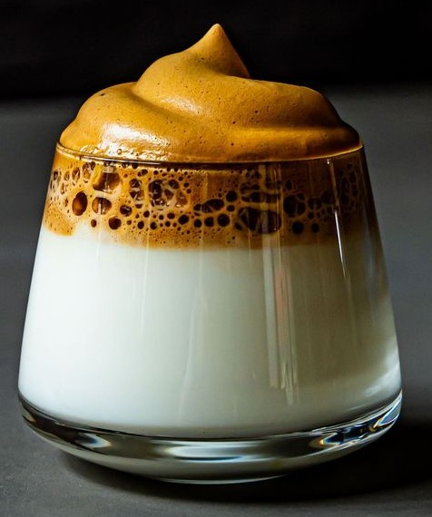

Dalgona Coffee

🧂 Ingredients
- 2 tablespoons instant coffee
- 2 tablespoons sugar
- 2 tablespoons hot water
- 1 cup cold milk
- Ice cubes
🥄 Steps
- In a bowl, mix instant coffee, sugar, and hot water.
- Whisk vigorously until fluffy and light (use a hand mixer or spoon).
- Fill a glass with cold milk and ice cubes.
- Spoon the whipped coffee on top of the milk.
- Stir before drinking if preferred, and enjoy!
← Back